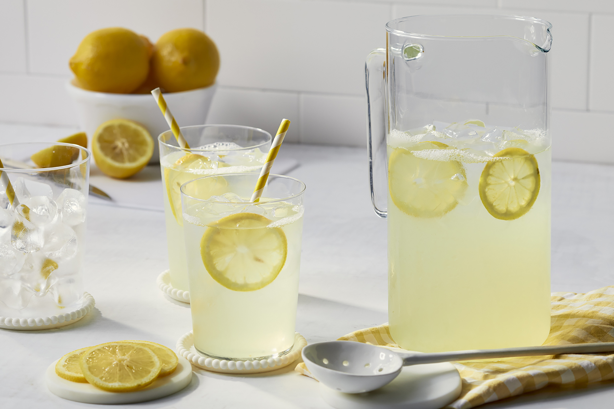

Lemonade

Description
A refreshing and easy to make drink
Ingredients
- 1 3/4 cups white sugar
- 8 cups water
- 1 1/2 cups lemon juice
Steps
- In a small saucepan, combine sugar and 1 cup water. Bring to boil and stir to dissolve sugar. Allow to cool to room temperature, then cover and refrigerate until chilled.
- Remove seeds from lemon juice, but leave pulp. In pitcher, stir together chilled syrup, lemon juice and remaining 7 cups water.